• Lernprogramm Basispass Pferdekunde:
⇒ Aktuellste Test-Version des Lernprogramms Basispass Pferdekunde
Version 2.0 vom 07.01.2017:Hinweis: Dieses Lernprogramm ist vorerst nur für die Nutzung unter Windows konzipiert.
1.Schritt:
Erstelle auf Deinem PC einen Ordner namens "Temp" und speichere ihn unter C: (Um den Ordner zu erstellen klicke mit der rechten Maustaste auf C:)
Der Pfad zu diesem Ordner lautet dann C:\Temp !
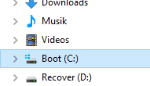 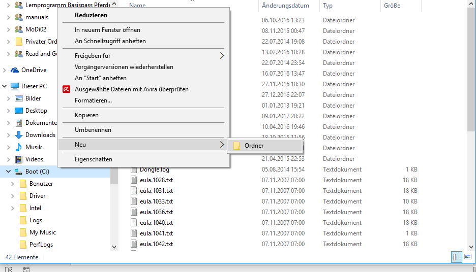 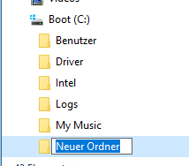 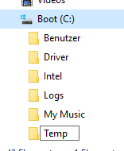
Lade nun die (für das Lernprogramm benötigte) Datei BasispassPferdekunde.mdb runter und speichere diese Datei
im eben erstellten Ordner "Temp". Der Pfad zu der Datei muss C:\Temp\BasispassPferdekunde lauten.
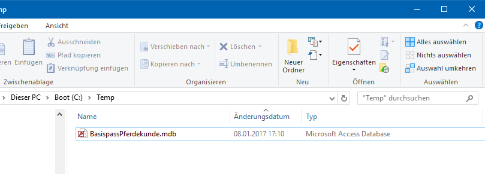
Diese Datei ist entscheidend für die Funktion des Programms!
Liegt sie jedoch an der richtigen Stelle, musst Du dich darum nicht mehr kümmern!
2.Schritt:
Nun kannst Du die Installationsdateien des Lernprogramms Lernprogramm Basispass Pferdekunde - Version 2.0 (ca 84 MB)
downloaden. Nach dem Klick auf den Link muss nur "Herunterladen" in der rechten oberen Ecke angeklickt werden!
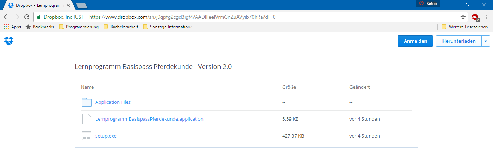
Bei dem daraufhin erscheinenden (Werbe-)Fenster kann "Nein danke. Weiter zum Download" angeklickt werden.
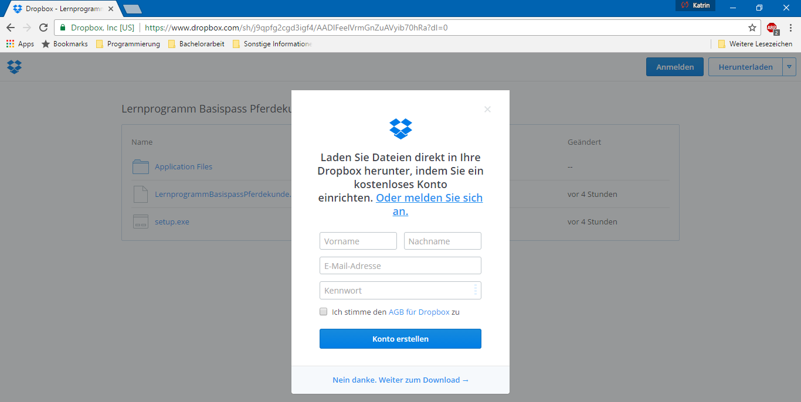
Danach werden alle Dateien heruntergeladen.
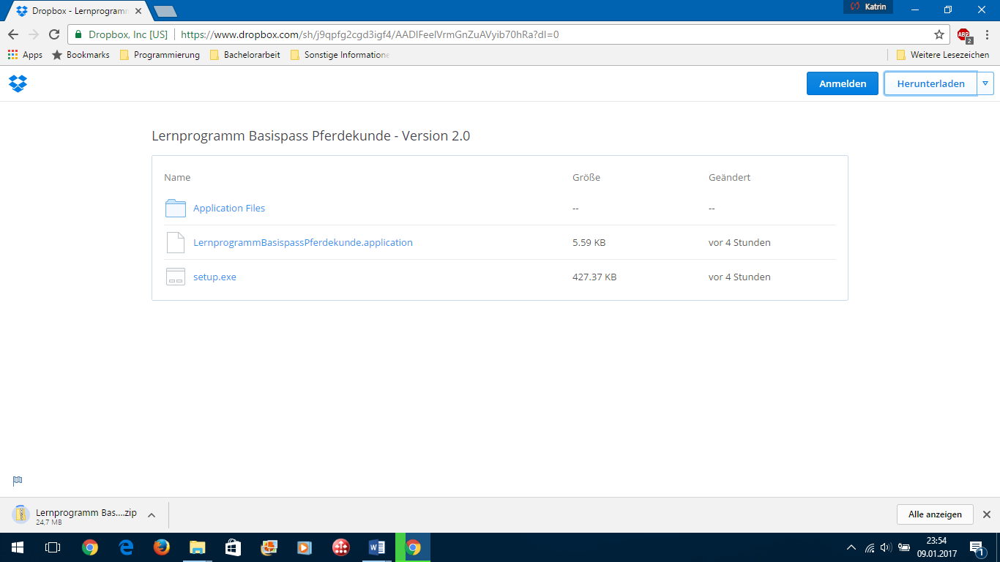
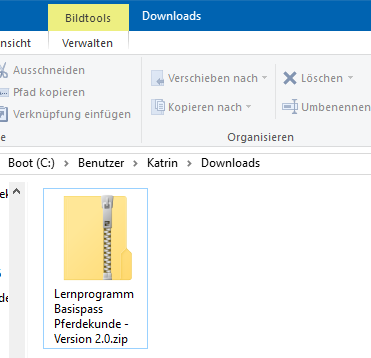
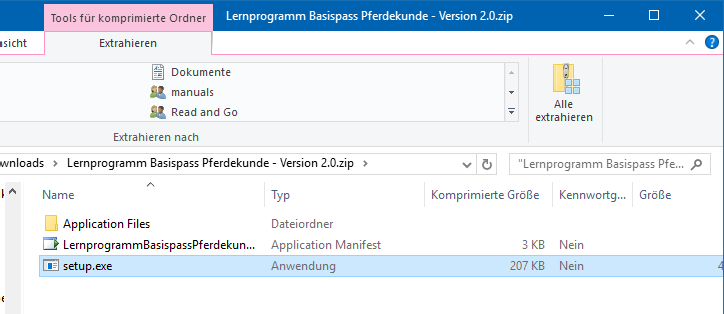
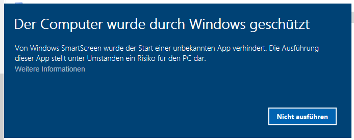
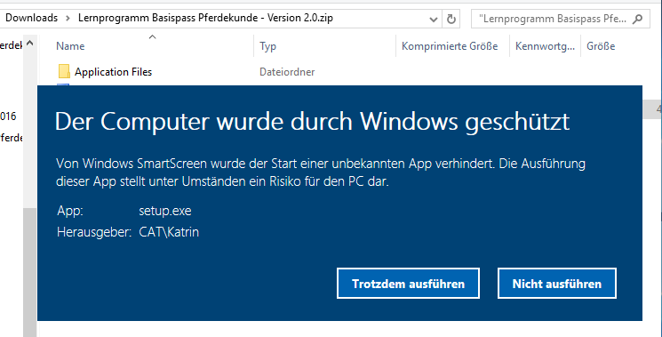
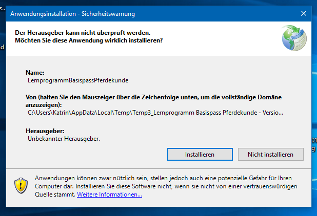
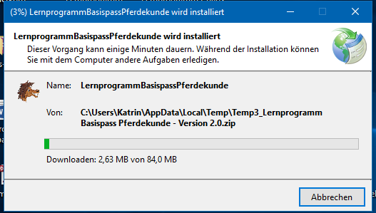
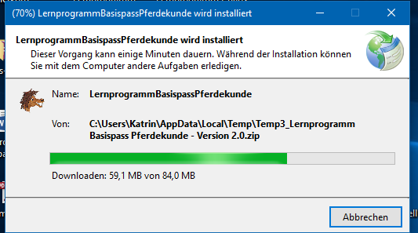
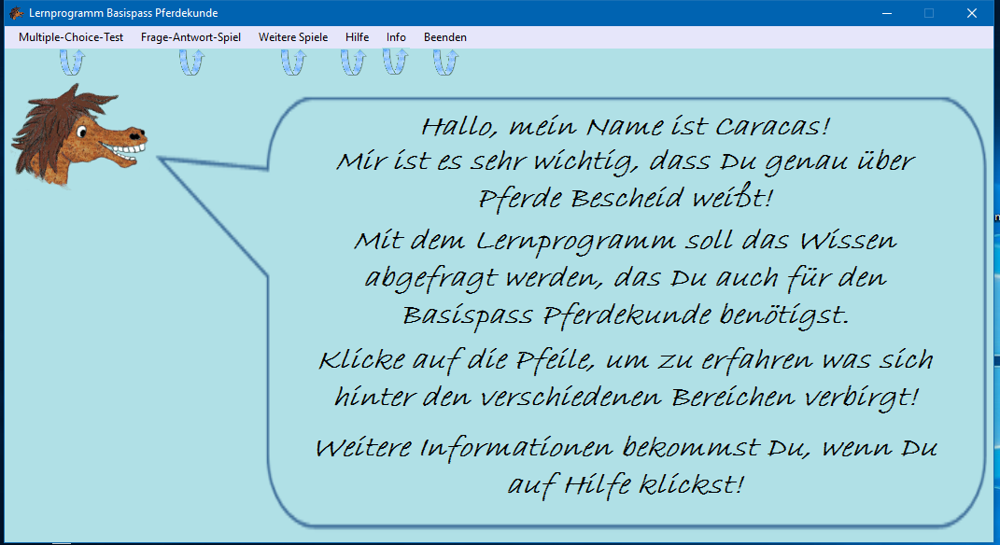
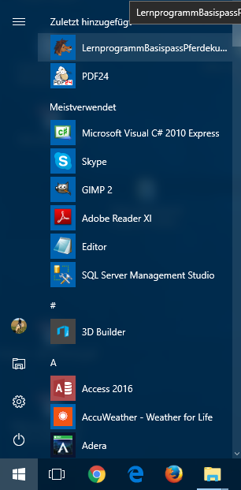 In diesem Fall ist es Dir überlassen, wo Du das Lernprogramm speicherst!
Öffne nun den Ordner (Lernprogramm Basispass Pferdekunde - Version 2.0) und installiere das Lernprogramm indem Du auf setup.exe klickst
und der Installationsanweisung folgst.
Sobald die Installation erfolgreich durchlaufen wurde, startet das Lernprogramm.
Das Lernspiel kann außerdem ab sofort auch aus Deinem Startmenü heraus gestartet werden, es heisst "Lernprogramm Basispass Pferdekunde"
und zeigt ein Symbol in Form eines Pferdekopfes an.
Und nun viel Spaß!
Bei weiteren Fragen wende Dich bitte mit einer genaueren Beschreibung des Problems (Stichworte/Screenshots/...) an:

Die E-Mails werden täglich beantwortet!
HINWEIS:
Da ich von Windows nicht als bekannte Herausgeberin erkannt werde, erscheint in manchen Fällen bei der Installation eine Warnung
("Dieser Computer wird durch Windows geschützt").
Klicke hier auf "Weitere Informationen" und den daraufhin erscheinenden Button "Trotzdem ausführen".
Auch zusätzliche Antivirenprogramme könnten Warnmeldungen anzeigen, diese können jedoch ignoriert werden.
Deinstallation:
Wenn das Programm irgendwann nicht mehr benötigt wird, kann es über die Systemsteuerung wieder deinstalliert werden.
Der Ordner C:\Temp (mit der darin enthaltenen Datenbank-Datei "BasispassPferdekunde.mdb") muss jedoch manuell entfernt werden.
⇒ Rätsel zum Lernprogramm Basispass Pferdekunde (Nach dem Absolvieren des kompletten Lernprogramms sollte das kein Problem mehr sein!)